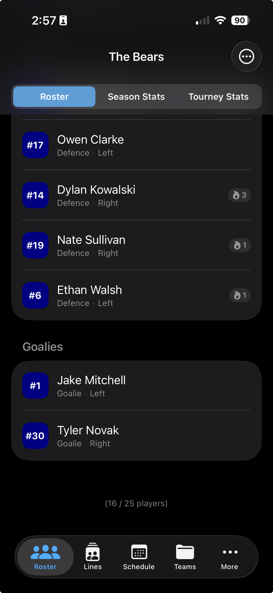
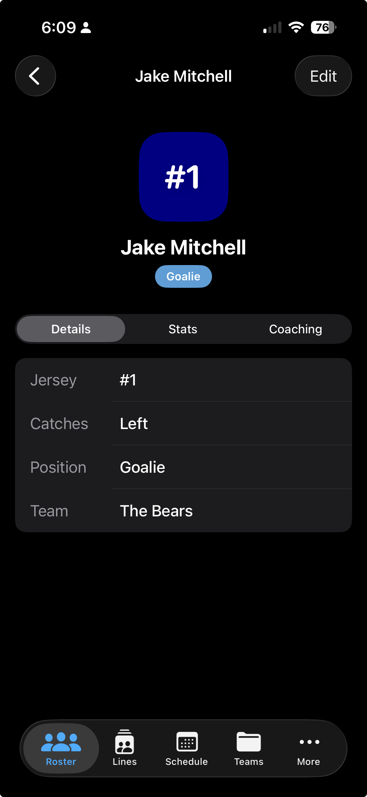
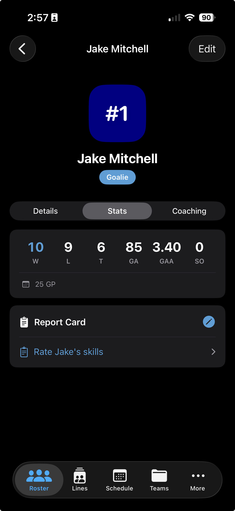
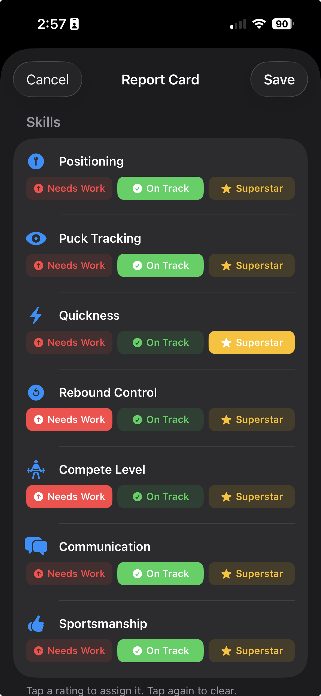
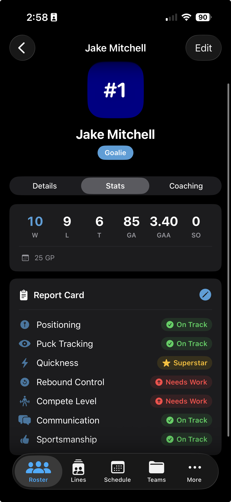
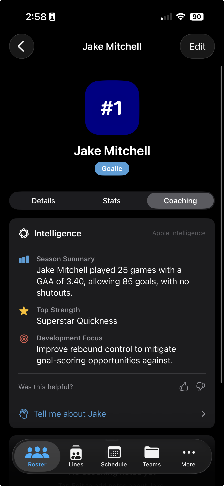

Goalie Profiles
Track wins, losses, goals against, GAA, and shutouts — plus goalie-specific skill ratings and AI-powered coaching insights.
Roster
Tap the Roster tab at the bottom of the screen. Skaters are listed first — keep scrolling until you reach the Goalies section. Tap any goalie's row to open their profile.

Profile Overview
The profile opens on the Details tab, showing the goalie's jersey number, catching hand, position, and the team they're rostered on.

Season Numbers
Tap the Stats tab to view the goalie stats card. All six key metrics are displayed at a glance, with games played shown below the divider.

Scroll down past the stats card to find the Report Card. Tap it to open the rating sheet, then assign a rating to each goalie-specific skill area.

Once rated, each skill shows its current status directly on the Stats tab — so you always have a full picture of stats and development in one place. Tap the Report Card at any time to update a rating.

AI Insights
The Coaching tab uses on-device Apple Intelligence to surface personalised insights based on your goalie's season stats and Report Card ratings. Each summary includes a season overview, a top strength, and a development focus to guide your next practice conversation.

Below the Apple Intelligence section you'll find a free-text Coaching Notes field. Use it to capture observations from practice or after a tough game — anything worth remembering before your next chat with the goalie or their parents.
Rinkside is currently in beta. Request TestFlight access and start building your goalie's stats profile today.
Request TestFlight Access